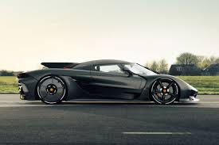
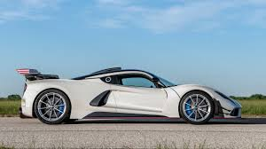
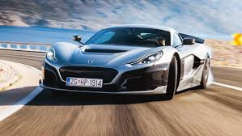
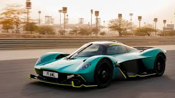
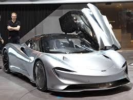
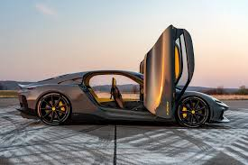
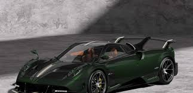

Top 10 carros mais rápidos do mundo
1- Koenigsegg Jesko Absolut
 Acoplado com um motor V8 de 5.0 litros biturbo e uma aerodinâmica aprimorada, são
produzidos 1.600 cv e 152,9 kgfm de torque.
- Velocidade máxima: 531 km/h.
- Aceleração de 0 a 100 km/h: Não informado.
- Potência: 1.622 cv.
- Torque: 152,9 kgfm.
- Preço (em dólares): US$ 2,8 Milhões.
2- Hennessey Venom F5
Possui um motor V8 6.6 biturbo duplo que produz 1.842 cv e 164,9 kgfm de torque.
- Velocidade máxima: 499 km/h.
- Aceleração de 0 a 100 km/h: 2,4 segundos.
- Potência: 1.842 cv.
- Torque: 164,9 kgfm.
- Preço (em dólares): US$ 1,8 Milhão.
3- Bugatti Bolide

Equipado com um motor W16 de 8.0 litros quadriturbo usando combustível de 110
octanas de corrida, ajudando a elevar o rendimento para 1.825 cv e 188,7 kgfm de torque.
- Velocidade máxima: 499 km/h.
- Aceleração de 0 a 100 km/h: 2,17 segundos.
- Potência: 1.825 cv.
- Torque: 188,7 kgfm.
- Preço (em dólares): US$ 4,7 Milhões.
4- Bugatti Chiron Super Sport 300+

Seu W16 8.0 litros com 4 turbos fornece 1.622 cv e 163,1 kgfm de torque.
- Velocidade máxima: 483 km/h.
- Aceleração de 0 a 100 km/h: 2,3 segundos.
- Potência: 1.622 cv.
- Torque: 163,1 kgfm.
- Preço (em dólares): US$ 3,9 Milhões.
5- SSC Tuatara

Ele entrega 1.774 cv e 177 kgfm de torque.
- Velocidade máxima: 455,3 km/h.
- Aceleração de 0 a 100 km/h: 2,5 segundos.
- Potência: 1.774 cv.
- Torque: 177 kgfm.
- Preço (em dólares): US$ 1,9 Milhão.
6- Rimac Nevera
Ele usa quatro motores elétricos com uma potência total de 1.940 cv e 240,5 lgfm de torque.
- Velocidade máxima: 415 km/h.
- Aceleração de 0 a 100 km/h: 1,97 segundo.
- Potência: 1.940 cv.
- Torque: 240,5 kgfm.
- Preço (em dólares): US$ 2,5 Milhões.
7- Aston Martin Valkyrie
Possui um conjunto mesclando um V12 aspirado, em conjunto a motores elétricos para produzir 1.176 cv e 91,8 kgfm de torque.
- Velocidade máxima: 402 km/h.
- Aceleração de 0 a 100 km/h: 2,5 segundos.
- Potência: 1.176 cv.
- Torque: 91,8 kgfm.
- Preço (em dólares): US$ 3 Milhões.
8- McLaren Speedtail
>O hipercarro é equipado com um motor que produz 1.050 cv e 117,2 kgfm de torque.
- Velocidade máxima: 402 km/h.
- Aceleração de 0 a 100 km/h: 2,9 segundos.
- Potência: 1.050 cv.
- Torque: 117,2 kgfm.
- Preço (em dólares): US$ 2 Milhões.
9- Koenigsegg Gemera
Possui três motores elétricos, que trabalham ao lado do motor de 2.0 litros de três cilindros, com dois turbos, trazendo 1.723 cv e 356,8 kgfm de torque.
- Velocidade máxima: 400 km/h.
- Aceleração de 0 a 100 km/h: 1,9 segundo.
- Potência: 1.723 cv.
- Torque: 356,8 kgfm.
- Preço (em dólares): US$ 500 mil.
10- Pagani Huayra BC Pacchetto Tempesta
O supercarro é equipado com um V12 que entrega 830 cv e 112 kgmf de torque.
- Velocidade máxima: 380 km/h.
- Aceleração de 0 a 100 km/h: 2,8 segundos (estimado).
- Potência: 830 cv.
- Torque: 112 kgfm.
- Preço (em dólares): US$ 3,4 Milhões.